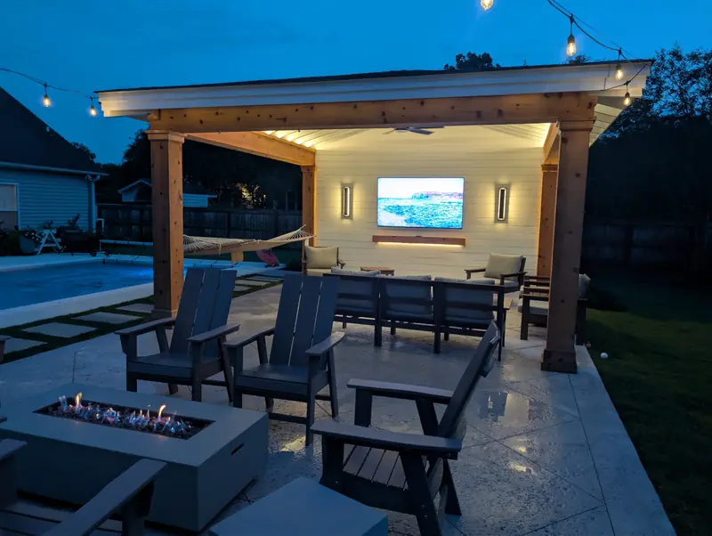

Pool Cabana · West Ashley
Built for parties and game days
The homeowner wanted a cabana by the pool for hosting parties and watching football. We built it with a rain screen behind the SmartSide siding, so moisture can drain and dry instead of sitting against the framing, and cedar posts and beams finished with craftsman trim.
The lighting is layered for use after dark. Tape lights hidden above the beams wash the open rafter ceiling, with wall sconces and bistro lights around them. Beyond the build quality, what impressed him most were the design ideas we brought to the project and the attention to detail.